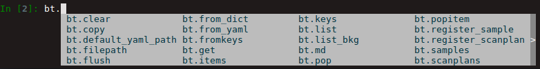

Setting up your Beamtime
This will usually be carried out by the beamline scientist. To check if all is well, carry out the following steps:
Check if you are in the collection environment
Type
bt. It should return similar output as the following:>>> bt {'bt_experimenters': ['Tim', 'Liu'], 'bt_piLast': 'Billinge', 'bt_safN': '300564', 'bt_uid': 'c76a6fe1', 'bt_wavelength': 0.1832}If not, please contact your beamline scientist.
This object is a container that contains critical information about your beamtime. You can investigate what is inside.
To see the kinds of information is contained, place a dot after bt and hit tab. The information (but not their values) will be listed.
{kind=link}
To see what is contained in a specific field, type bt.<thing> and hit return. For example, in our case:
>>> bt.wavelength
0.1832
this is a beamtime (‘bt’) type of object with name ‘bt’. More interesting is the metadata it contains:
>>> bt.md
{'bt_experimenters': ['Tim', 'Liu'],
'bt_piLast': 'Billinge',
'bt_safN': '300564',
'bt_uid': 'c76a6fe1',
'bt_wavelength': 0.1832}
The instrument responsible, created an initial version of bt with information
from the Safety Approval Form (SAF) form: PI’s last name, SAF number
and the experimenters.
When the beamtime object is created, it is given its own unique-ID, the bt_uid.
As long as you use the XPD acquisition software, every scan you make during your beamtime,
along with the other Beamtime level metadata,
will contain this 'bt_uid' metadata field with the same uid value.
This can be searched for later in the scan headers, and used to find all the data
collected during your beamtime.
Some of the other things in the container are not quantities, or attributes, but functions, or methods.
>>> bt.list
<bound method XPD.list of <class 'xpdacq.beamtime.Beamtime'>>
This means that bt not only contains beamtime information, but it can do things. In this
case, bt.list will list all the xpd-acquire-objects that have been created at
the time. To execute a method, add a parentheses to the end of bt.list()
and hit return. So far, there is only 1 object, the bt object with name bt.
>>> bt.list()
ScanPlans:
0: 'ct_5'
1: 'ct_0.1'
2: 'ct_1'
3: 'ct_10'
4: 'ct_30'
5: 'ct_60'
Samples:
0: Setup
1: Ni_calibrant
2: bkgd_kapton_0.9mmOD
3: bkgd_kapton_1mmOD
4: bkgd_kapton_0.5mmOD
5: activated_carbon_1
6: activated_carbon_2
7: activated_carbon_3
...
As we mentioned before, if bt doesn’t exist,
>>> bt
---------------------------------------------------------------------------
NameError Traceback (most recent call last)
<ipython-input-1-d0d7ab093f8d> in <module>()
----> 1 bt
NameError: name 'bt' is not defined
speak to your beamline scientist as there may be other aspects of the
environment setup that need to be fixed. If you ever do have to create
(we call it instantiate) a new bt object, it is done like this:
>>> bt = Beamtime('Billinge', 300256, ['Simon','Billinge', 'Chia-Hao','Liu'], 0.18326)
We will assume that bt exists. Now, we move on to the next step, Setting up your XPD acquisition objects within our beamtime.